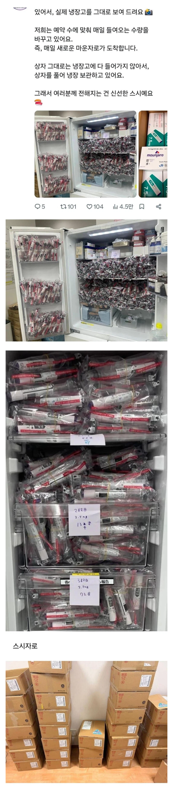
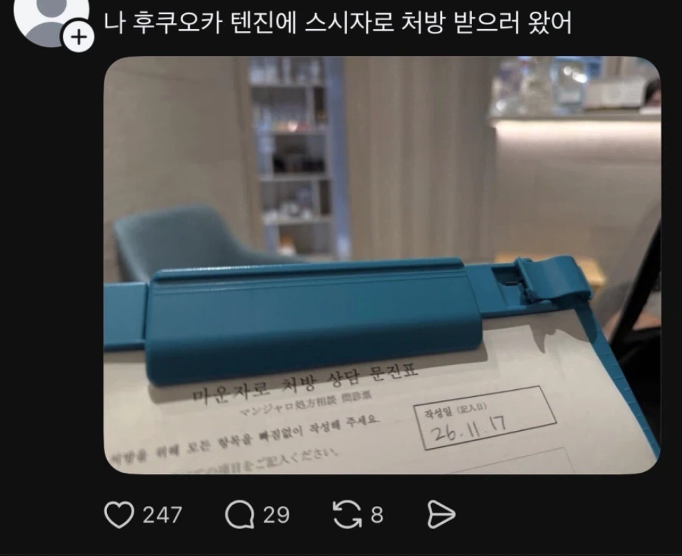

https://bbs.ruliweb.com/best/board/300143/read/77465440


한글 문진표도 있고 물량 트럭단위로 준비 on
https://bbs.ruliweb.com/best/board/300143/read/77465440


한글 문진표도 있고 물량 트럭단위로 준비 on
얼마나 비만인거냐고
저거 냉장고에 더 많이 보관하기 위하여 '박스에서 빼내서 이렇게 넣어 보관중이에요. 재고 ㅈㄴ많으니 걱정 ㄴㄴ' 하는 짤이었는데,
다른 의원에서 '우린 박스채로 냉장고에 보관 가능하게 아주 큰 냉장고가 있어요' 하면서 어디 마트에 파는 쇼케이스냉장고 ㅈㄴ 큰거 두대 찍은 사진 올리면서 앞에 병원 돌려까면서 자기 병원 오라고 홍보하더라ㅋㅋ
ㅋㅋㅋㅋ
역시 뛰는 놈 위에 나는 놈 있구나
아 딸깍하면 돈이 복사되는 이벤트중인데
노 저어야지!
님도 파셈ㅋㅋㅋ 돈들어옴ㅋㅋ
이게. 얼마나 국익에 저해되는 법이냐
오히려 저거때문에 일본안갈거한번더 가는중임
놀러가면서 사온다고 아 ㅋㅋ
사러가면서 논다고 아 ㅋㅋ
이거 죄다 외화유출인데 이래도 한국가격 낮출생각안해?
원종타령 하면 병신들이 좋다고 빨아제낄텐데, 지들은 그냥 뒷돈이나 처받으면 되지ㅋㅋ
사실 한국에서 릴리가 개쳐비싸게 팔고있는거라 이러나 저러나 외화유출이긴함 ㅋㅋㅋㅋ 국산인 에페가 가성비가 너무 떨어져서..
낮추는 주체는 한국 릴리고 한국 정부가 협의를 하든 제재를 하든 뭘 해서 낮춰야 하는데
사실 일본이 이례적인 개깡패 모드로 낮춘 거라고 함
놀랍게도 일본도 싸지만 중국이 더 싸서 마라자로가 더 대세라더라 요즘.
장첸자로는 카피약 아님?
카피는 아니고 릴리에서 수입한거.
웨이하이가 가까워서 갈만할텐데 아직 까지 중국은 소통 결제방법 모두 일본보다 어렵고 낯선방법이 많아서
금전적으로는 이득이어도 종합적으로 봤을때 일본이 나은듯
특히 술구매+마운자로구매 이거면 무조건 일본임 ㅋㅋ
그래도 나도 스시로 함.
고고재팬
슬림클리닉 인가?
찾아봤는데 약은 싼데 진료비 따로 받는곳이 있고
약값이 살짝 비싼데 진료비 안받는곳이 있고
물량이 딸리면 갑자기 일정 바꾸는데도 있고 해서 사진처럼 물량 잘 받아오는 전국단위 체인점이 오히려 나을수도 있음
잘 찾보고 해야 하는듯
진짜 5짜리 3개월 계산하면
한국에서 110정도인데 일본가면 55정도라
남는돈으로 놀러가는 비용이 되더라
일본도 마운자로 위고비 가격 내리는데 우리나라만 꾸역꾸역 높은 상태 유지하더니 결국 나온게 신토불이 에페 ㅋㅋㅋ
90년대 신토불이의 망령들이 아직도 살아있음
싼 엔화로 관광도 가고 살도뺴고 ㅋㅋㅋㅋ
존나게먹고 와서 살빼면 개이득 ㅋㅋ
무슨 김치냉장고임?
일본여행 많이 가라는 우리나라 정부와 제약사의 큰 그림이다
욕하지 마라 ㅋㅋㅋㅋㅋㅋㅋ
엔화 쌀 때 많이 놀러가라 ㅋㅋ 주사도 맞고
일본의 명물 스시자로
한국에서 마운자로를 산다
→ 5mg 기준 약 40만원 돈을 약값으로 내면서 미국 일라이릴리로 송금한다 / 진료비 약 2~3만원
일본에서 마운자로를 산다
→ 5mg 기준 12만원 돈을 약값으로 내면서 미국 일라이릴리로 송금한다. / 진료비 약 2~3만원
일본에서 사는게 미국으로 나가는 외화 유출을 반으로 줄인 애국자 아니냐ㅋㅋ
ㄹㅇ
솔직히 마운자로 이꼴낸 놈들 ㅈㄴ 매국노새끼들임
지금까지 1조원정도는 안내도될돈 해외로 반출시킨거고
앞으로 얼마나 더 유출될지도모른다는거
담달에 병원 비대면 예약 하고 대마도로 택배로 받을려고 배 예약함, 배값 포함해도 여기 한달분이 저기서는 3달임 일본 한번도 안가 봤는데 당일치기로 약사러 갈줄이야..
ㄹㅇ 이거 선동아님ㅋㅋㅋ
내주변에도 진짜 마운자로 하나땜에 일본여행 준비하는 지인들있음
와 매일 박스단위로 들어온다고?
맞는사람 엄청 많나보네
3개월마다 일본여행가면 되겠네 ㅋㅋ
간김에 싸게 구매 ㅋㅋ
너희들이 사준 스시지로가 미사일로 돌아온다고!!
일본 마운자로 차원이 달라!
3개월마다 해외여행 보내주려는 큰그림이네 ㅋㅋ
이랏샤이마세~